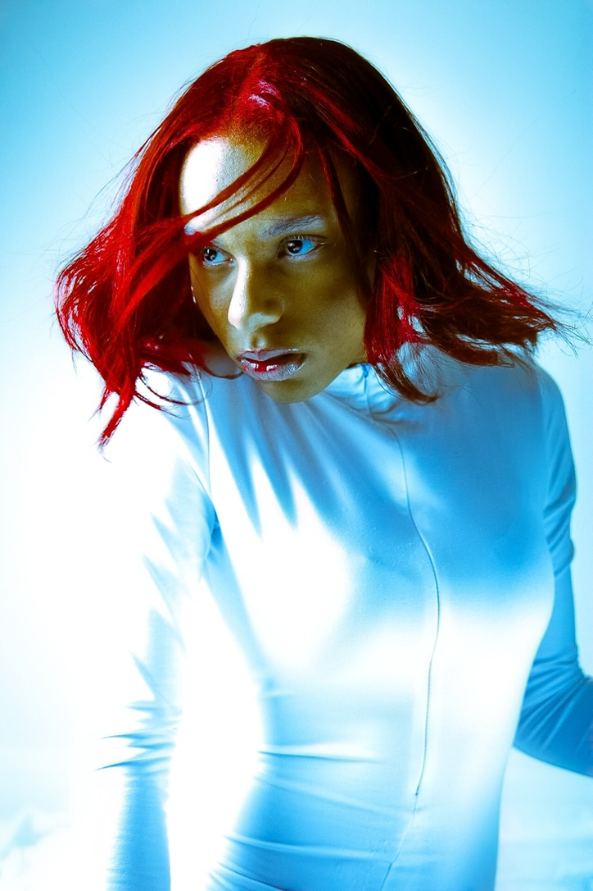
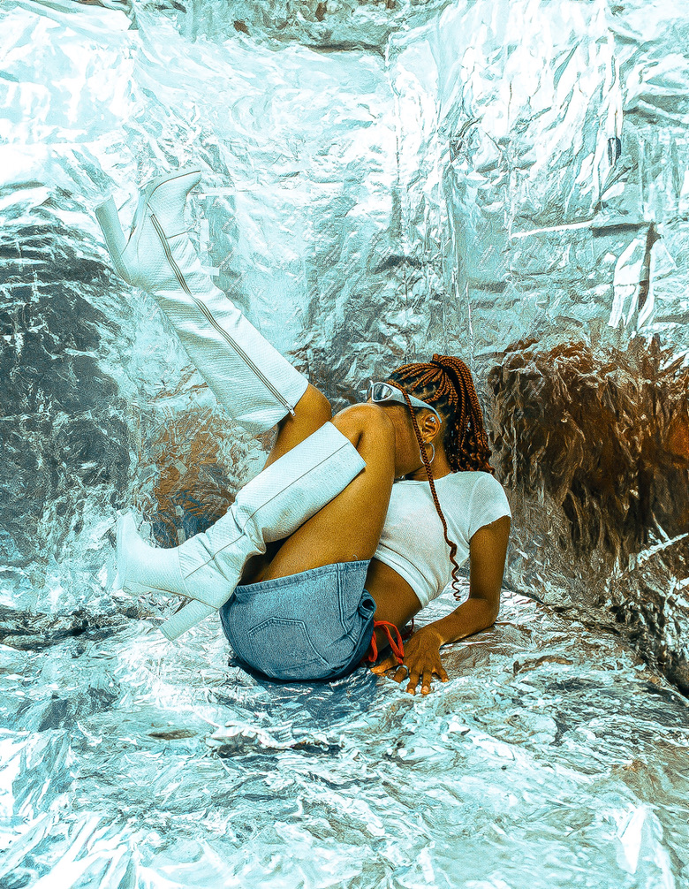
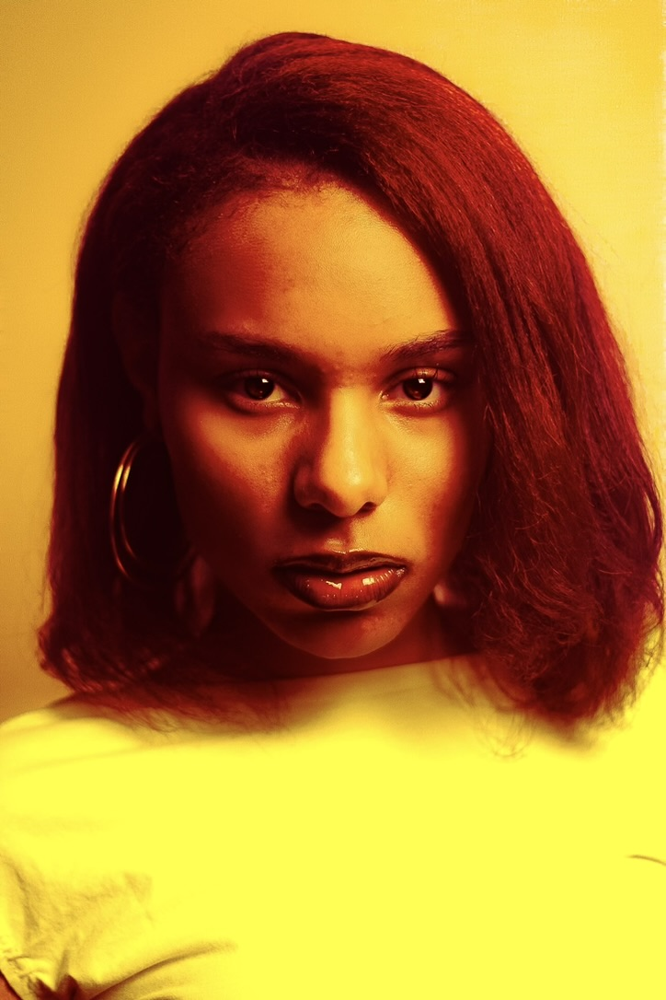
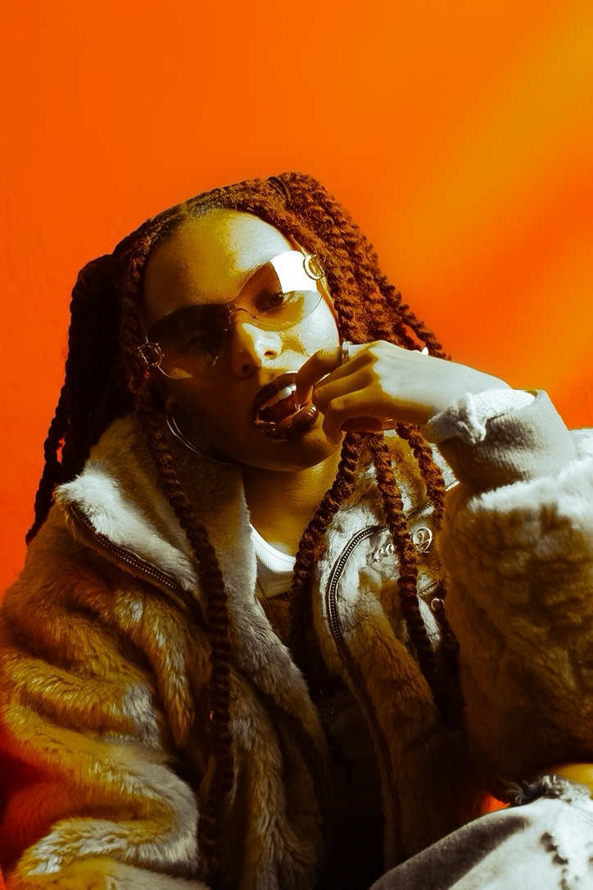
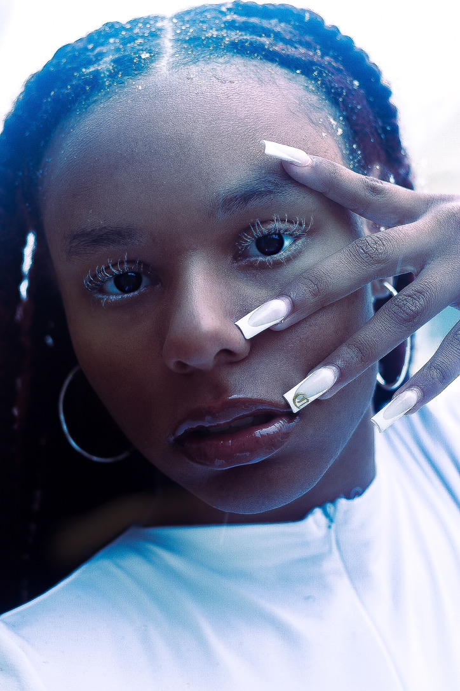
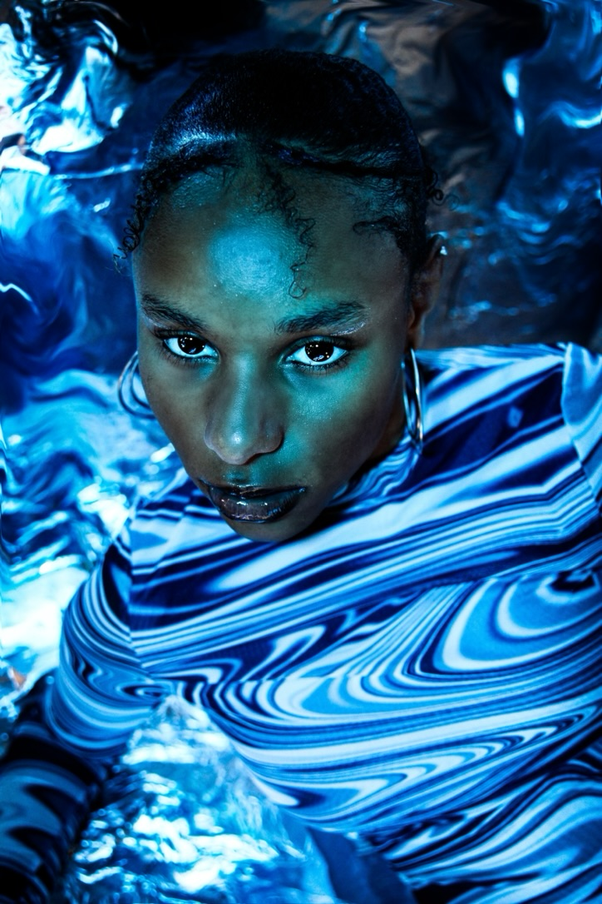
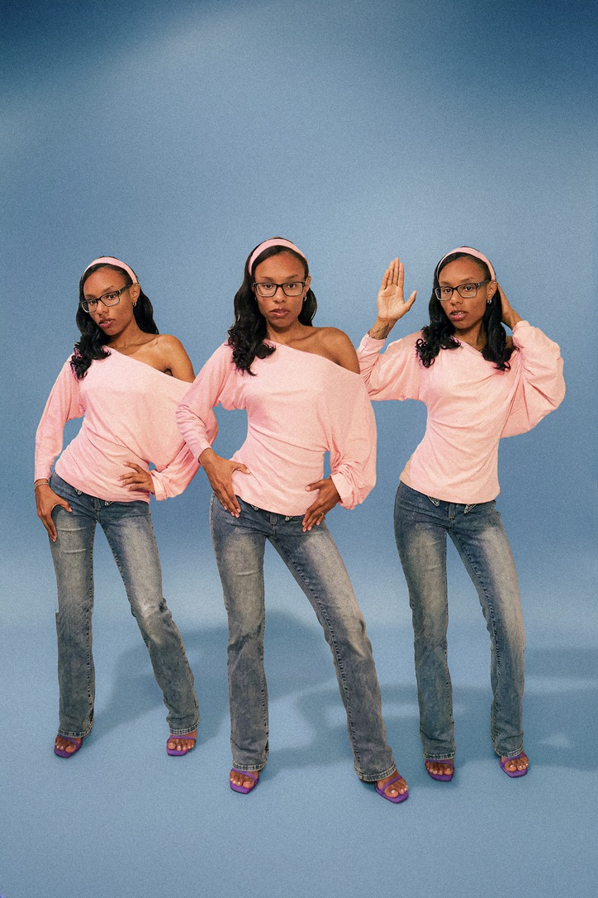
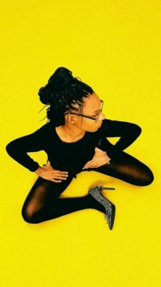

‘I’m Just a Girl’: A Lighthearted TikTok Trend Becoming a Cultural Debate'
Published Oct. 9, 2026 | Her Campus
An examination of a Tiktok trend and its impact on cultural conversations.

I am a junior journalism major dedicated to reporting on representation in media. My work examines gender equity, racial diversity in executive leadership, and the cultural evolution of media representation.
Through feature reporting and visual storytelling, I focus on stories and photos thatchallenge standard narratives in media, bringing attention to how institutional policies directly affect underrepresented artists.
Currently, I photograph myself and capture videos/interviewsfor campus publications while building a portfolio in multimedia journalism and creative direction.
A visual collection exploring color, expression, and representation.

Winter Storm Warning

For You

Afternoon

BRRR

Blizzard

Illusion X

Barbie Dream

Wicked
Expected Graduation: May 2028
Specialization: Multimedia Storytelling
Maryland Athletic Department
Selected reporting on trends, and school representation.
Published Oct. 9, 2026 | Her Campus
An examination of a Tiktok trend and its impact on cultural conversations.
Published Oct. 15, 2026 | Her Campus
A deep dive into HBCUs and their representation of their royal courts, exploring the cultural significance and challenges faced by students participating in these traditions.